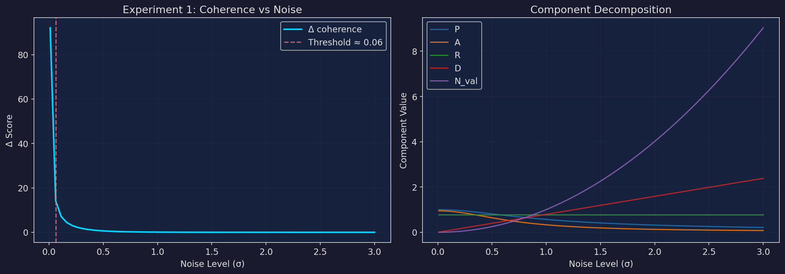
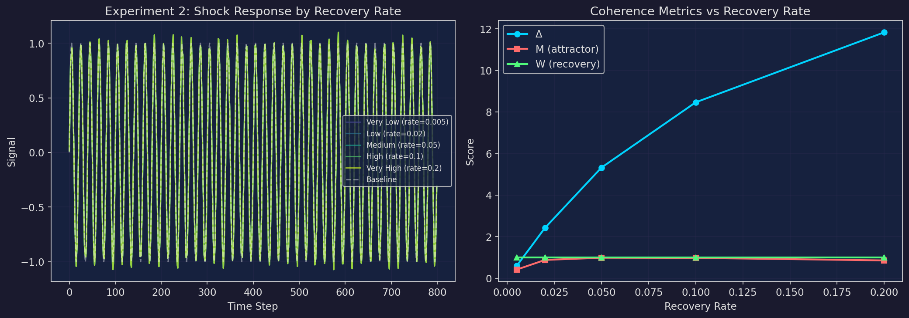
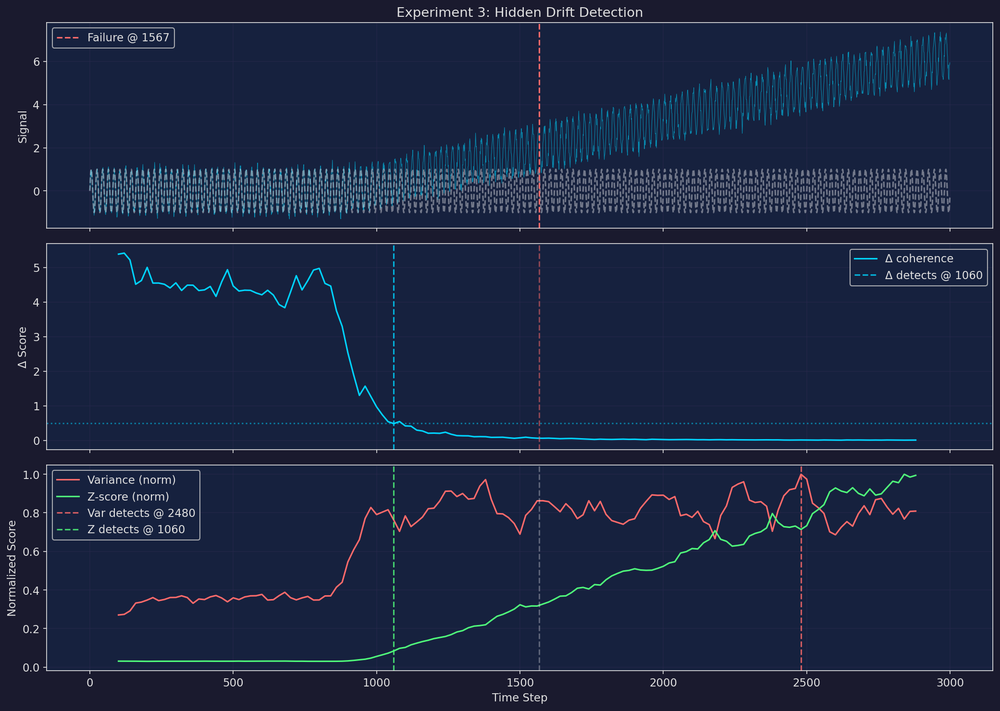
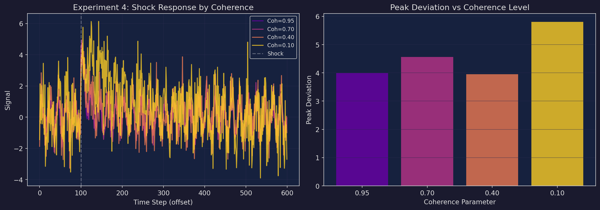
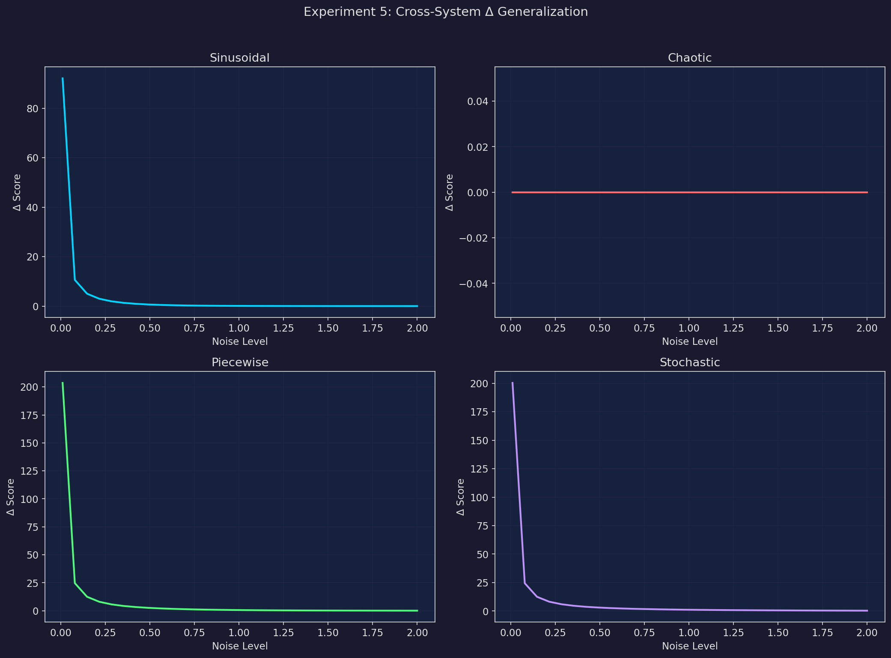
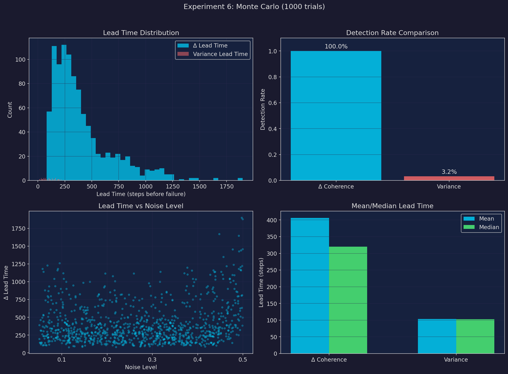

Key Results
Across 1,000 randomized Monte Carlo trials, the Δ coherence metric achieved 100% detection rate with a mean lead time of 406 steps before failure. Traditional variance detected only 3.2% of failures. In the hidden drift experiment, Δ provided 507 steps of early warning before system breakdown.
Experiment Suite
Coherence vs Noise Threshold

Recovery Dynamics After Shock

| System | Rate | Δ | M (attractor) | W (recovery) |
|---|---|---|---|---|
| Very Low | 0.005 | 0.598 | 0.418 | 1.000 |
| Low | 0.020 | 2.426 | 0.883 | 1.000 |
| Medium | 0.050 | 5.328 | 0.988 | 1.000 |
| High | 0.100 | 8.464 | 0.981 | 1.000 |
| Very High | 0.200 | 11.829 | 0.859 | 1.000 |
Hidden Drift Before Visible Failure

Δ Coherence
Detected at step 1,060
Lead time: 507 steps before failure
Failure at step 1,567
Variance
Detected at step 2,480
Lead time: −913 steps (after failure)
Missed the failure entirely
Shock Response vs Coherence Level

| Coherence | Peak Dev. | Time to Return | Δ | Post-Shock σ |
|---|---|---|---|---|
| 0.95 (high) | 4.00 | 40 | 6.700 | 0.045 |
| 0.70 | 4.56 | 19 | 0.846 | 0.270 |
| 0.40 | 3.95 | 23 | 0.122 | 0.581 |
| 0.10 (low) | 5.81 | 35 | 0.033 | 0.819 |
Cross-System Generalization

| Signal Type | Mean Δ | Behavior |
|---|---|---|
| Sinusoidal | 3.916 | Smooth degradation curve |
| Chaotic (logistic map) | 0.000 | Inherently incoherent — no baseline tracking possible |
| Piecewise | 9.219 | High baseline fidelity |
| Stochastic (random walk) | 9.491 | High baseline fidelity |
Monte Carlo Lead-Time Analysis

Δ Coherence
Detection rate: 100.0%
Mean lead: 406 steps
Median lead: 320 steps
Variance
Detection rate: 3.2%
Mean lead: 103 steps
Median lead: 103 steps
Next Steps
Experiment 7
Real data validation on multi-building electricity load. 4 office buildings, weather-adjusted baselines, 162MB hourly dataset. 9 phases of analysis already complete — needs programmatic Δ scoring pipeline.
Benchmarking
Compare Δ against change-point detection (PELT, BOCPD), LSTM/transformer anomaly detectors, and standard frameworks (PyOD, ADTK).
Operator Tuning
Optimize M (Memory-of-Attractor) and W (Windowed Recovery) operators. Formalize gating thresholds. Investigate cross-system CV for chaotic signals.
Framework
The Δ.72 Coherence Framework is domain-agnostic. The core hypothesis is that coherence — the degree to which a system maintains its internal structure under perturbation — is a more fundamental indicator of health than variance or deviation alone. A system can have high variance and still be coherent (resilient oscillation). A system can have low variance and be losing coherence (quiet drift before catastrophic failure).
Extensible to: energy systems, biological systems, financial signals, operational infrastructure.